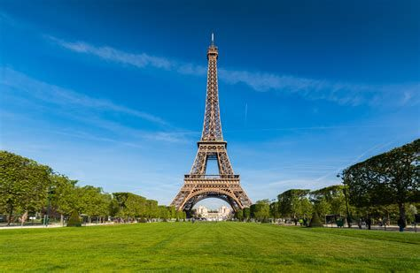
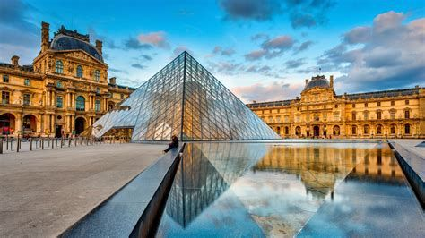
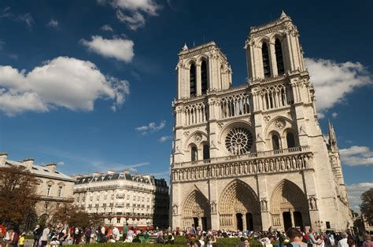

La tour Eiffel Écouter est une tour de fer puddlé de 324 mètres de hauteur (avec antennes)o 1 située à Paris, à l’extrémité nord-ouest du parc du Champ-de-Mars en bordure de la Seine dans le 7e arrondissement. Son adresse officielle est 5, avenue Anatole-France.
Construite en deux ans par Gustave Eiffel et ses collaborateurs pour l'Exposition universelle de Paris de 1889, célébrant le centenaire de la Révolution française, et initialement nommée « tour de 300 mètres », elle est devenue le symbole de la capitale française et un site touristique de premier plan : il s’agit du troisième site culturel français payant le plus visité en 2015, avec 5,9 millions de visiteurs en 20162. Depuis son ouverture au public, elle a accueilli plus de 300 millions de visiteurs3.
D’une hauteur de 312 mètreso 1 à l’origine, la tour Eiffel est restée le monument le plus élevé du monde pendant quarante ans. Le second niveau du troisième étage, appelé parfois quatrième étage, situé à 279,11 mètres, est la plus haute plateforme d'observation accessible au public de l'Union européenne et la deuxième plus haute d'Europe, derrière la tour Ostankino à Moscou culminant à 337 mètres. La hauteur de la tour a été plusieurs fois augmentée par l’installation de nombreuses antennes. Utilisée dans le passé pour de nombreuses expériences scientifiques, elle sert aujourd’hui d’émetteur de programmes radiophoniques et télévisé

Le palais du Louvre est un ancien palais royal situé dans le 1er arrondissement de Paris sur la rive droite de la Seine, entre le jardin des Tuileries et l'église Saint-Germain-l'Auxerrois. S'étendant sur une surface bâtie de plus de 135 000 m2, le palais du Louvre est le plus grand palais européen, et le second plus grand bâtiment du continent après le Marché aux fleurs d'Aalsmeer. Il abrite aujourd'hui le musée du Louvre.
La construction du Louvre est indissociable de l'histoire de Paris. Elle s'étend sur plus de 800 ans1, bien que le plan général du palais n'ait été imaginé qu'à la Renaissance. Charles V y établit sa résidence, donnant au palais un statut qu'il a conservé jusqu'au règne de Louis XIV2.
Avec 10,2 millions de visiteurs en 2018 — dont un quart de Français —, c'est le musée le plus visité au monde3 et le site culturel le plus visité en France devant la tour Eiffel, la cathédrale Notre-Dame de Paris étant en tête des monuments à l'accès libre avec 13,6 millions de visiteurs estimés4.

Il tire son nom de la rue Notre-Dame-des-Champs, dont le tracé fort ancien va de la rue de Rennes, près de la station Saint-Placide, à Port-Royal où elle rejoint l'extrémité sud du boulevard Saint-Michel. Ses habitants abrègent parfois le nom du quartier par le sigle « NDDC »[réf. nécessaire].
Ce quartier forme la partie méridionale du 6e arrondissement, délimité par le tracé des rues suivantes :
le boulevard du Montparnasse, au sud,
la rue de Sèvres, à l'ouest et au nord,
la rue Madame et la rue d'Assas à l'est.
Il est donc environné par le quartier du Val-de-Grâce dans le 5e arrondissement à l'est, par le quartier du Montparnasse dans le 14e arrondissement au sud-est, par le quartier Saint-Thomas-d'Aquin dans le 7e arrondissement à l'ouest, et par le quartier Necker dans 15e arrondissement au sud-ouest. Ainsi que, au nord, par le quartier Saint-Germain-des-Prés et le quartier de l'Odéon où se trouvent la mairie et le jardin du Luxembourg.